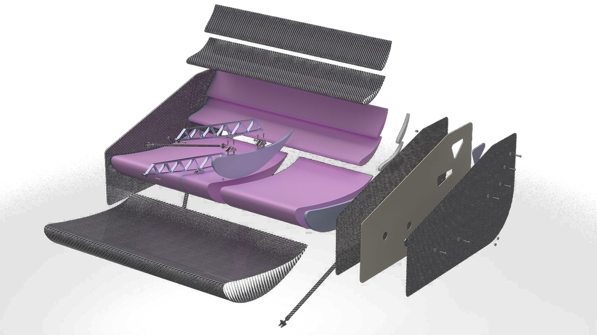
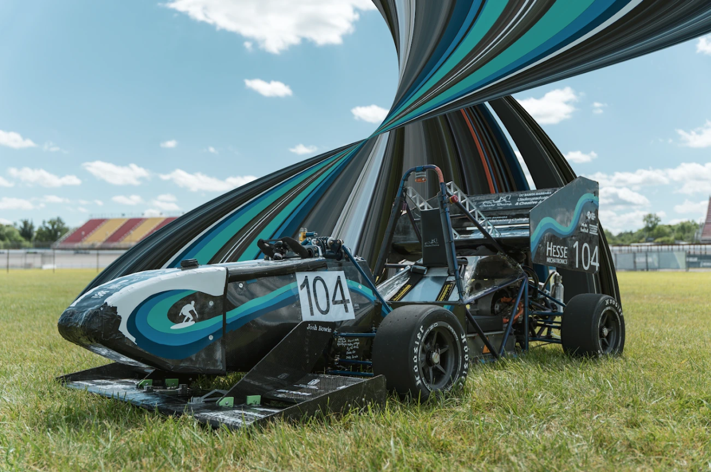
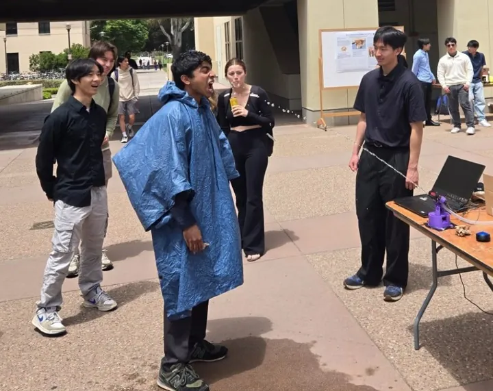
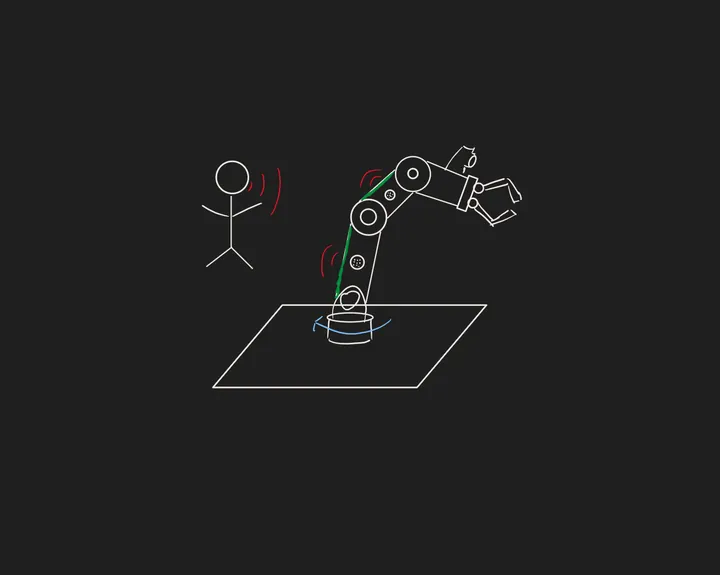
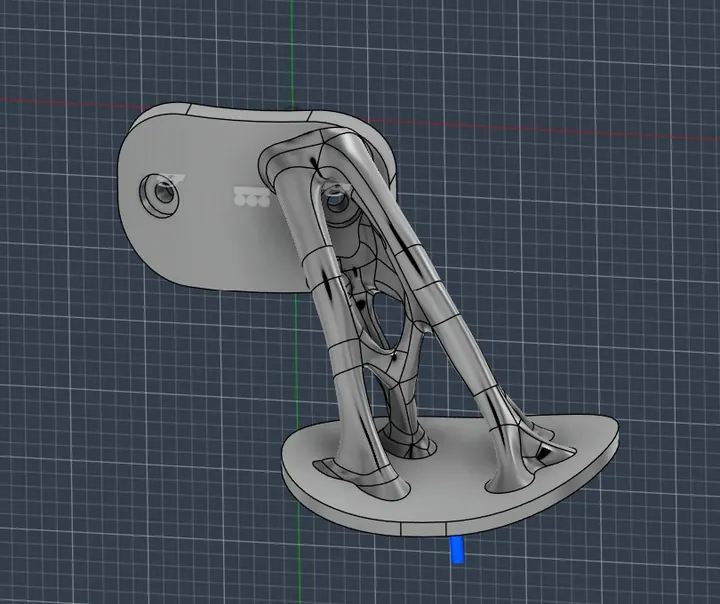
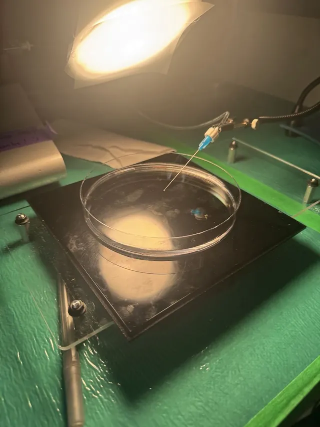
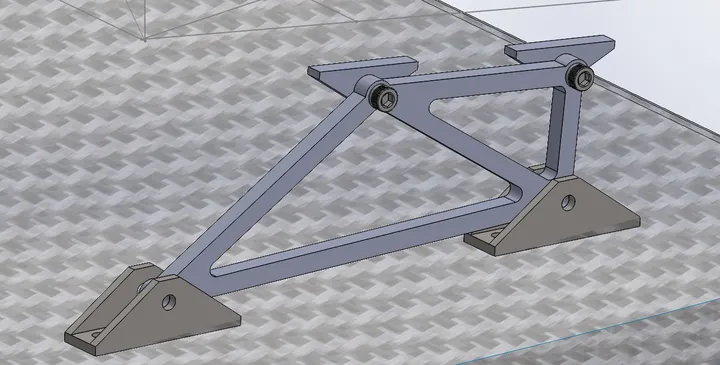

I’m a senior in mechanical engineering at UCSB (B.S., expected June 2027) with interests at the intersection of design, controls, and robotics, plus hands-on manufacturing experience. My coursework includes controls, advanced viscous flow, thermosciences, mechatronics, vibrations, and FEA. Outside of engineering I’m principal clarinetist in the UCSB Wind Ensemble and Orchestra.
Benson Lin

Exploded view of the GR25 Gaucho Racing rear wing.
Mechanical engineering · UC Santa Barbara
Senior mechanical engineering student at UCSB building aerodynamic, composite, and mechatronic systems, with experience in design, analysis, and manufacturing.
Currently working onDisney Imagineering senior capstoneSensor-fusion robotic arm for safe, compliant guest interaction — currently in early concept generation.Selected work
Engineering projects and research.
- 01Gaucho Racing aerodynamicsSide diffusers, wings, and composites for the GR26 Formula SAE car.475 N simulated downforce at 35 mph. 30th overall at FSAE Michigan.

- 02Hydration BotA computer-vision turret that aims a water stream into an open mouth.1.21 m maximum range. Hit rate fell from 100% at 12 in to 20% at 39 in, in tests run before a pump voltage drop was diagnosed.

- 03Sidepod cooling researchCFD-driven sidepod and radiator duct design, funded by a $1,200 URCA grant.+46% radiator mass flow in CFD. The sidepods were later removed from the car. :(

- 04Sensor-fusion robotic armDisney Imagineering senior capstone, in progress.Team of five. $6K budget.

- 05Generative-design clarinet thumb restA generative-design clarinet thumb rest, designed for aluminum 3D printing.3.1 g, with 0.005 mm peak displacement under 25 N.

- 06Capillary spreading experimentsHigh-speed experiments on droplet spreading across surfactant baths.3 vessel sizes by 2 concentrations. Within about 4% of the lab baseline.

- 07Front wing bracket — FEA studyStructural analysis of a GR26 aluminum front wing mounting bracket in SolidWorks Simulation.41.08 MPa peak von Mises stress and 0.364 mm maximum displacement, with a factor of safety of about 6.7 against yield.

Earlier work
About
- DesignSolidWorks, Fusion 360, technical drawings, GD&T
- SimulationAnsys Fluent and Workbench, COMSOL, FEA, DOE
- FabricationCNC mill, manual lathe, 3D printing, laser cutting, composite wet layup and vacuum bagging
- ProgrammingMATLAB, Python, Arduino, Java, LabVIEW